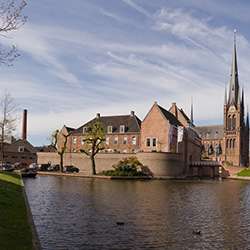
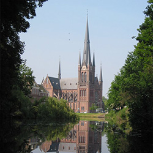

Het Groene Hart
Woerden heeft velen toeristische attracties. Daarom is Woerden ook een ideale plek
voor een dagje uit met het gezin of met vrienden.
Hieronder vind je twee benoemswaardigheden van Woerden.

Wellicht één van de meest bekende bezichtingen binnen Woerden, het kasteel. Het kasteel is
gebouwd in het jaar 1415 door Jan VI van Beieren, heer van Woerden.
Er moet ook al eerder een kasteel in Woerden hebben gestaan, want bij de opdracht
tot de bouw wordt verwezen naar een ander "Steenen Huys". Vermoedelijk heeft dat kasteel aan de westkant van Woerden gelegen, ter verdediging van Utrecht tegen Holland.
Het huidige kasteel is gebouwd in opdracht van de graaf van Holland ter verdediging tegen de bisschop van Utrecht en ligt daarom aan de oostkant van de stad.
Tijdens het Beleg van Woerden (1575/1576) was in het kasteel een garnizoen gehuisvest dat de stad verdedigde tegen de Spanjaarden.
In het Rampjaar 1672 werd het kasteel bezet en zwaar beschadigd door de Fransen. Op enige afstand vond de grote slag bij Kruipin plaats.

Hoeveel je niet zomaar binnen mag treden in de kerk is het wel een plaatje om te zien. De Heilige-Bonaventurakerk is een katholieke kerk
die is gewijd aan de heilige Bonaventura. De in de kerk huizende geloofsgemeenschap is onderdeel van de Parochie Pax Christi, die valt onder het Bisdom Rotterdam.
De kerk staat naast het Kasteel van Woerden en is aangemerkt als rijksmonument.
De kerk gebouwd in 1892, is ontworpen door architect Nicolaas Molenaar sr.
en uitgevoerd door C.P.W. Dessing. Het gebouw geldt als een van Molenaars belangrijkste werken. Het is een kruisbasiliek in neogotische stijl, gebaseerd op de vroege
Franse gotiek. De kerktoren is 77,2 m hoog en staat daarmee op de 31ste plaats van de lijst van hoogste kerktorens in Nederland. De toren wordt bekroond met een scherpe
naaldspits met flankerende torentjes. Deze domineert van verre het profiel van Woerden.